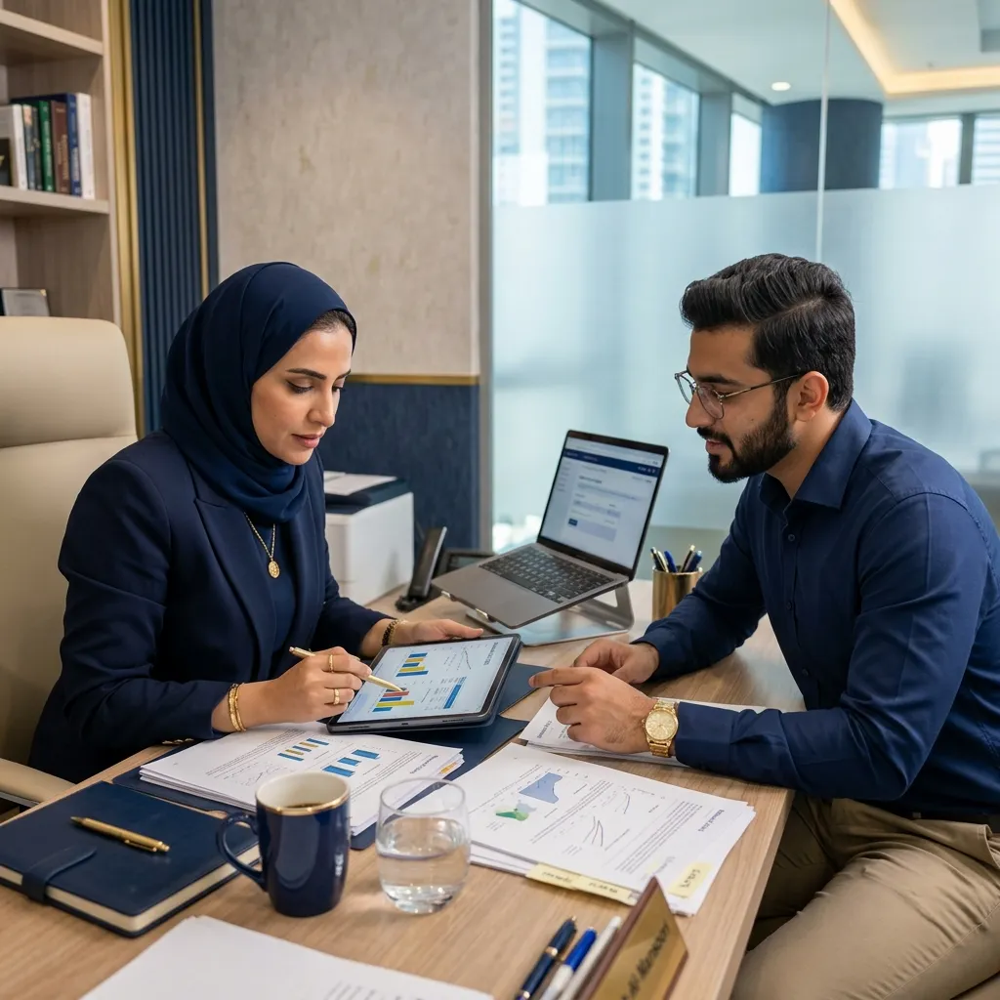

كيف تختار موضوع بحث مناسب؟
دليل مبسط يساعدك على اختيار فكرة بحثية قابلة للتطبيق ومرتبطة بتخصصك.
اقرأ المزيدالأكاديمية للخدمات التعليمية منصة متخصصة في الدعم الأكاديمي والإرشاد البحثي، تساعد طلاب الجامعات وطلبة الدراسات العليا والباحثين على فهم متطلبات مشاريعهم، تنظيم أعمالهم الأكاديمية، وتحسين جودة الصياغة والتحليل والعرض وفق معايير علمية واضحة.
نقدم خدمات إرشاد ومراجعة وتحليل تساعدك على تطوير جودة عملك الأكاديمي، وفهم متطلباته، وتنظيم مخرجاته بصورة أكثر احترافية.
نساعدك في صياغة فكرة البحث، تحديد المشكلة، بناء الأسئلة أو الفرضيات، واختيار المنهجية المناسبة وفق متطلبات جامعتك.
تفاصيل الخدمةندعمك في تحليل البيانات باستخدام SPSS وAMOS وSmartPLS وExcel، مع تفسير النتائج وربطها بأهداف الدراسة.
تفاصيل الخدمةنراجع الصياغة والأسلوب والبنية اللغوية، ونساعدك على تحسين وضوح النص واتساقه الأكاديمي.
تفاصيل الخدمةنساعدك في تنسيق البحث أو الرسالة وفق أدلة الجامعات وأنظمة التوثيق مثل APA وMLA.
تفاصيل الخدمةدعم متخصص في المناهج وطرق التدريس، الإدارة التربوية، تقنيات التعليم، علم النفس التربوي، والتربية الخاصة.
تفاصيل الخدمةإرشاد ومراجعة في مجالات الإدارة، الموارد البشرية، التسويق، الجودة الشاملة، والعلوم الاجتماعية.
تفاصيل الخدمةدعم أكاديمي في موضوعات المحاسبة، المالية، التحليل المالي، المعايير المحاسبية، ودراسات الجدوى.
تفاصيل الخدمةإرشاد أكاديمي في مشاريع تقنية المعلومات، تحليل الأنظمة، البرمجة، الذكاء الاصطناعي، وقواعد البيانات.
تفاصيل الخدمةنركز على تقديم دعم أكاديمي مسؤول يجمع بين التخصص، الدقة، المتابعة، والالتزام بسرية بياناتك ومتطلباتك.
في مجالات أكاديمية متعددة.
التزام كامل بسرية الملفات والبيانات.
خلال مراحل الخدمة.
تساعد على تحسين جودة المخرجات.
نلتزم بالمواعيد المتفق عليها.
أسلوب عمل قائم على الإرشاد، لا الحلول الجاهزة.

تواصل معنا عبر واتساب أو نموذج الطلب، وأرفق المتطلبات أو الملفات المتاحة.
يقوم الفريق بمراجعة المطلوب وتحديد نوع الدعم المناسب.
نرسل لك نطاق العمل، المدة المتوقعة، والتكلفة قبل البدء.
يعمل المختص معك وفق خطة واضحة مع متابعة مستمرة حسب طبيعة الخدمة.
تحصل على المخرجات المتفق عليها، مع إمكانية طلب مراجعات ضمن نطاق الخدمة.
نغطي طيفاً واسعاً من التخصصات لضمان تقديم دعم دقيق وموجه.
ساعدني فريق الأكاديمية في فهم نتائج التحليل الإحصائي وتنظيم عرضها بطريقة أوضح، مما جعلني أكثر استعدادًا لمناقشة النتائج بثقة.
كانت المراجعة اللغوية والتنسيق وفق APA دقيقة ومنظمة. أكثر ما أعجبني هو الالتزام بالوقت وسهولة التواصل.
الإرشاد في صياغة المقترح البحثي ساعدني على ترتيب أفكاري وفهم متطلبات الجامعة بشكل أفضل. تجربة مريحة ومنظمة.
دليل مبسط يساعدك على اختيار فكرة بحثية قابلة للتطبيق ومرتبطة بتخصصك.
اقرأ المزيدتعرف على أهم خطوات تجهيز البيانات واختيار الاختبار الإحصائي المناسب.
اقرأ المزيدخطوات عملية لتنظيم المراجع وتجنب أخطاء الاقتباس والتوثيق.
اقرأ المزيدأرسل متطلباتك الآن، وسيقوم فريق الأكاديمية بمراجعتها وتوجيهك إلى الخدمة الأنسب وفق تخصصك ومرحلتك الأكاديمية.